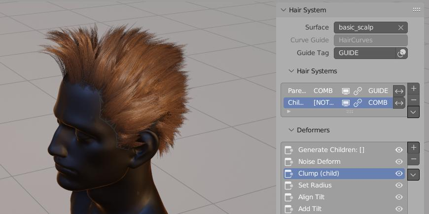

Hair Systems¶
Hair Tool comes with tool for generating procedural hair geometry in non destructive way, called Hair System. Generated hair can be used for baking in Hair Tool baking scene. System is based on Blender Geometry Nodes, and it works by creating stack of hair deformers - similar to how blender modifiers work. List of hair deformes:
- Noise Deform - adds noise distortion to strands
- Curls\Wavy - adds curls or wavy effect to hair strands
- Clump - allow to clump hair strands around guide strands (only for child Hair System)
- Twist - allow to twist strands around guide strands (only for child Hair System)
- Trim - it will shorten strands roots and/or tips by random amount
 Various effects that can be achieved with procedural Hair Systems
Hair Deformers¶
They allow to procedurally change chair look in non-destructive and in linear way (meaning can be stacked one after another in similar way than Blender modifiers can). Each hair deformer can be reordered and some can be influenced by previous Hair Systems if Set as Child (eg. Clump or Twist deformer)
Noise Deformer¶
It will add random distortion to hair strands
Curls/Waves Deformer¶
You can get curly hair and wavy hair effect from this deformer
Trim¶
Allows to randomize length of hair strands
Clumps¶
Clumps effect requires to set Hair System to be set as child
Twist¶
Twist effect requires to set Hair System to be set as child. For best effect is is good idea to place it after Clump deformer
Child System¶
Settings System as Child will allow you to use additional hair deformers effects: clumping or twist
Note: After using 'Set as Child' on current Hair System, it will be set as child of first sytem that is above in the stack.*
Using Global Attributes¶
Some properties can use global value after clicking Lock icon. This will allow you to modify these values, for all Hair System at same time.
Locking Length attribute allow us to tweak straight and curly hair all at once
Note:This is especially important for 'Steps' attribute if using set as child. Without using same Steps value for both parent and child hair system, you will get unexpected results.
Curve Guide Setup¶
Guide Curve can be used to deform the first Hair System, which will behave as its child. It allows to add some manual artistinc touch, to otherwise fully procedural Hair workflow. Any Curve object can be set as guide curve, that includes Curve objects generated by hair drawing and interactive combing.
First we draw few hair strands on Plane object. Then we use drawn strands, as guide for first Hair System, which has Clump deformer
Note: Guide curve cannot have any bevel depth or profile object attached. 'Bind Guide Curve' button takes care of it automatically. Don't be suprised when your guide curve object looses its 'look'